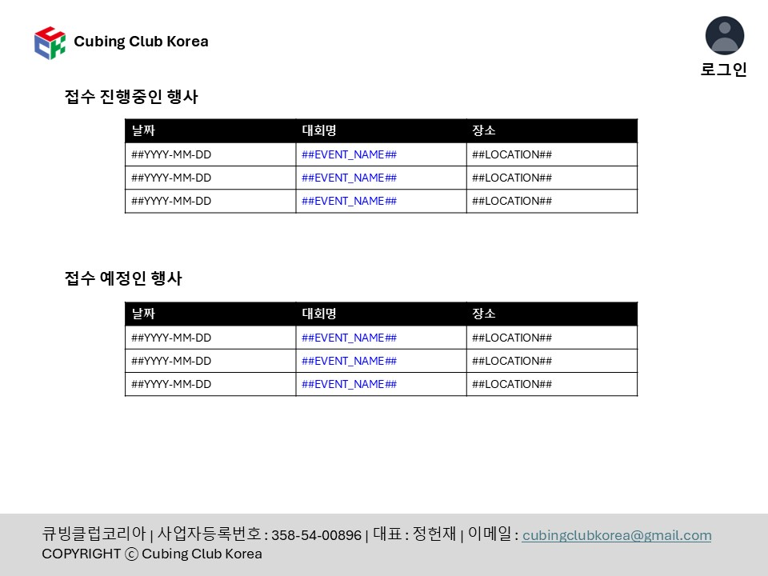

Main_Page.jpg 이미지 상세 분석
원본 Main_Page.jpg

이미지에서 확인되는 디자인 요소들:
헤더
: 상단에 로고/제목 영역
메인 콘텐츠
: 중앙의 테이블 형태 콘텐츠
레이아웃
: 깔끔한 테이블 기반 구조
색상 스키마
: 기본적으로 흰색 배경에 검정 텍스트
타이포그래피
: 심플한 폰트
현재 구현된 페이지
주요 차이점 분석 필요:
Main_Page.jpg의 정확한 레이아웃, 색상, 간격을 분석하여 동일하게 구현해야 합니다.
특히 주목해야 할 부분:
헤더의 정확한 높이와 스타일
테이블의 정확한 디자인과 간격
전체적인 색상 스키마
폰트 크기와 스타일
여백과 패딩값